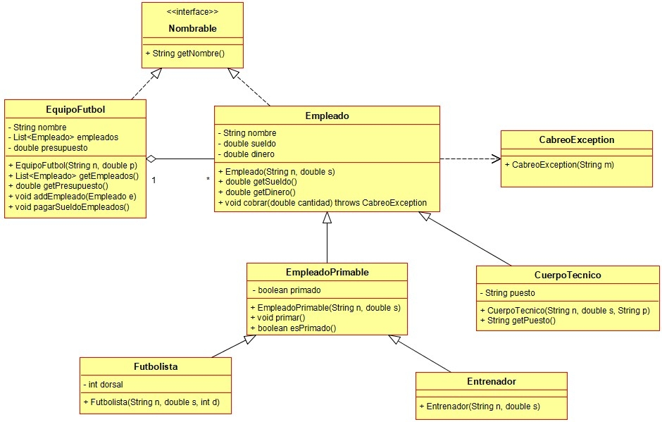

Ejercicio 11 : Consulta el diagrama Equipo de fútbol y programa las clases Empleado, CuerpoTecnico y CabreoException.

-
Empleado: Es un empleado cualquiera del equipo de fútbol.
-
nombre: El nombre del empleado.
-
sueldo: Dinero que gana el empleado.
-
dinero: La cantidad de dinero que tiene el empleado en su banco. Inicialmente un empleado no tiene dinero en su banco.
-
cobrar: Método que ingresa al empleado la cantidad de dinero pasada como parámetro. Si dicha cantidad es menor que su sueldo, la ingresa, y a continuación lanza una CabreoException.
-
CuerpoTécnico: Es un empleado que tiene asignado un puesto en el equipo, por ejemplo, entrenador de porteros, preparador físico, etc.
-
CabreoException: Tipo de excepción que se lanza cuando un empleado cobra menos que su sueldo. El mensaje asociado es siempre el mismo: “Al empleado … no se le han pagado … euros”, donde se muestra el nombre del empleado y la cantidad de su salario que no se le ha pagado.